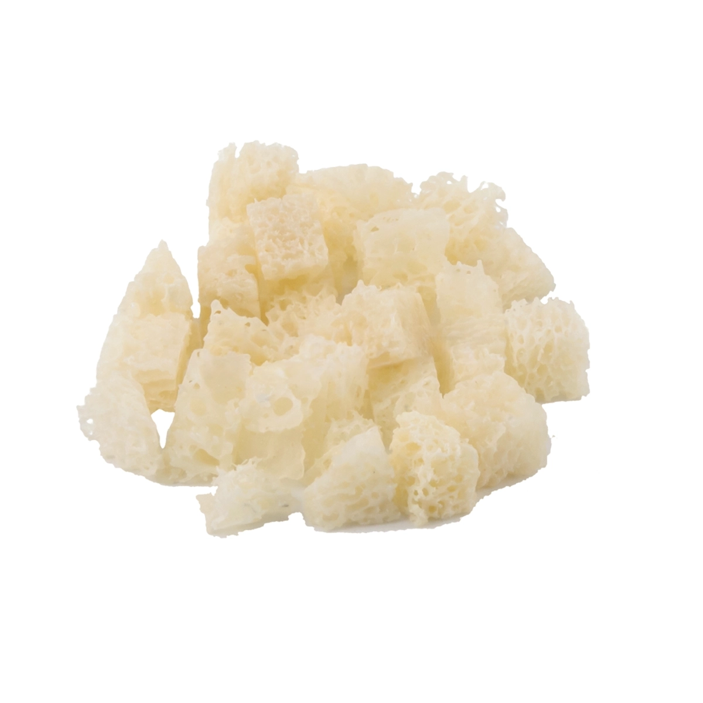
Biograft
Implantes Biológicos
Chips Biograft®
Implante derivado de tejido óseo humano procesado, osteoconductor, estéril y apirogénico. Disponible en variantes trabeculares y esponjosas.
Distribuimos productos de las marcas líderes en ortopedia y cirugía: implantes biológicos, ortesis posoperatorias y paquetes quirúrgicos estériles. Todo respaldado con asistencia técnica especializada.

Implante derivado de tejido óseo humano procesado, osteoconductor, estéril y apirogénico. Disponible en variantes trabeculares y esponjosas.
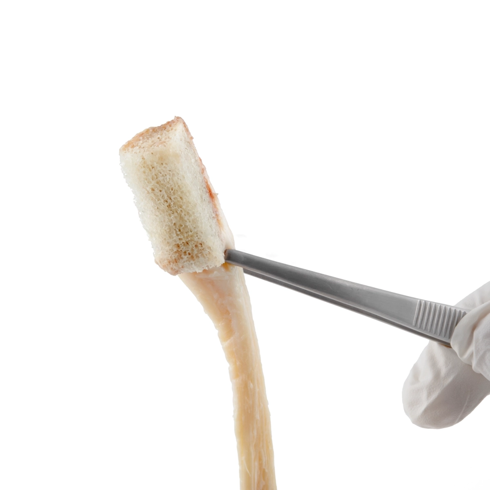
Implante de tejido tendinoso humano para reconstrucción de ligamentos. Estéril, apirogénico y esterilizado por radiación gamma.
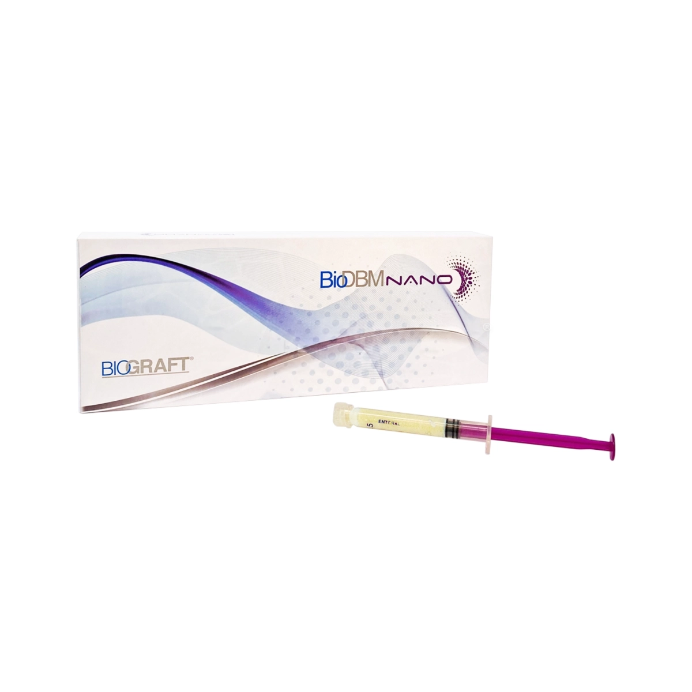
Matriz Ósea Desmineralizada Nano lista para usar. Injerto óseo procesado en múltiples presentaciones para aplicación clínica inmediata.

Inmovilizador posoperatorio para hombro con 15° de abducción. Para reparación de manguito rotador, Bankart y esguinces.

Inmoviliza el hombro después de procedimientos quirúrgicos o luxación. Ajustable, cómodo y fácil de usar en ambos lados.
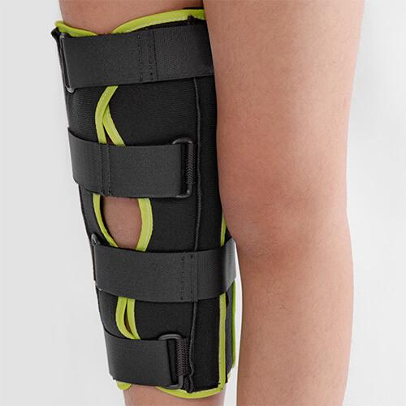
Inmoviliza y da soporte a la rodilla en tratamientos pre y posoperatorios. Paneles laterales ajustables con varillas de estabilidad.

Rodillera articulada con rango de movimiento controlado para cirugías de LCA, LCP, LMC y LCL. Barras telescópicas y ajuste con velcro.

Bota ortopédica para fracturas estables, esguinces e inestabilidades de tobillo. Sistema de cámaras de aire para soporte y estabilidad.

Tela negra transpirable con acolchado de poliuretano para estabilización de muñeca. Incorpora varilla metálica y dos plásticas.

Almohadillas de compresión fría que se ajustan cómodamente a la articulación. Disponibles para rodilla, hombro y tobillo.

Controla el rango de movimiento de flexión y extensión. Para reconstrucción de codo, tendones y fracturas. Pre y posoperatorio.
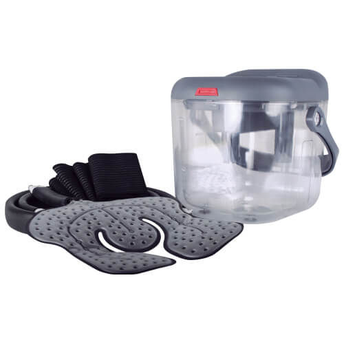
Crioterapia controlada portátil para aliviar dolor y edema posoperatorio. Bomba sumergible con termómetro integrado para control de temperatura.
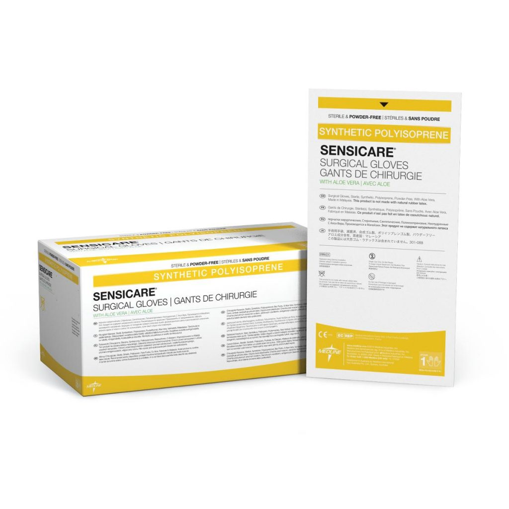
Guantes estériles de poliisopreno sintético Isolex® con aloe vera liofilizado. Sin látex, sin polvo. Inspeccionados al 100%.

Paquete quirúrgico estéril completo para procedimientos generales. Batas, cubiertas de mesa, campos adhesivos y bolsa de suturas.

Paquete estéril para cirugías menores con batas quirúrgicas, campos, gasas, hojas de bisturí y lápiz de electrocirugía.
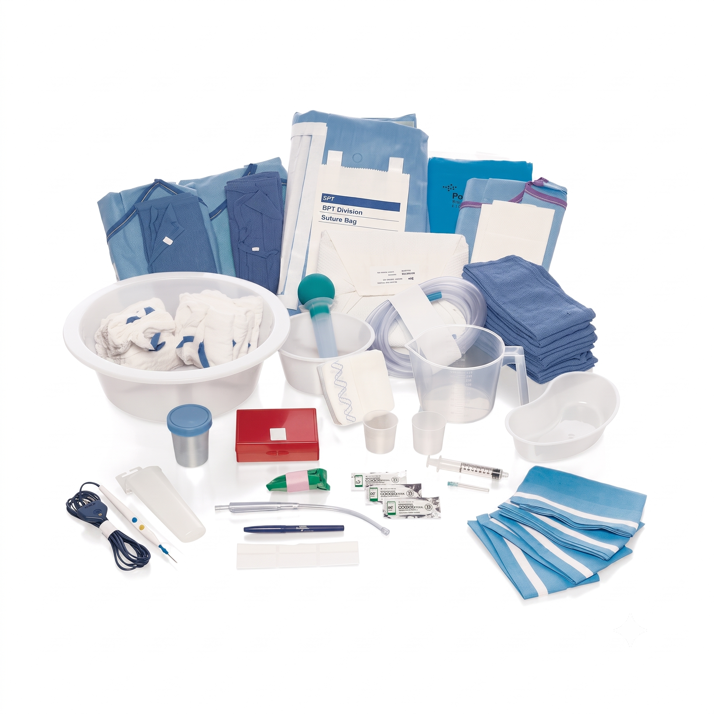
Solución completa para procedimientos complejos: batas reforzadas, campos absorbentes, compresas, bisturís y control de agujas.

Paquete integral para artroscopía de rodilla con campos especializados, tubo de succión, gasas, batas y estoquinete impermeable.

Paquete especializado para artroscopía de hombro con campo para división cuerpo-hombro, campo con bolsa colectora y agujas espinales.

Versión deluxe para artroscopía con dos batas Sirus, campos en "U" con adhesivo y campo con bolsa colectora de fluidos 229×315 cm.
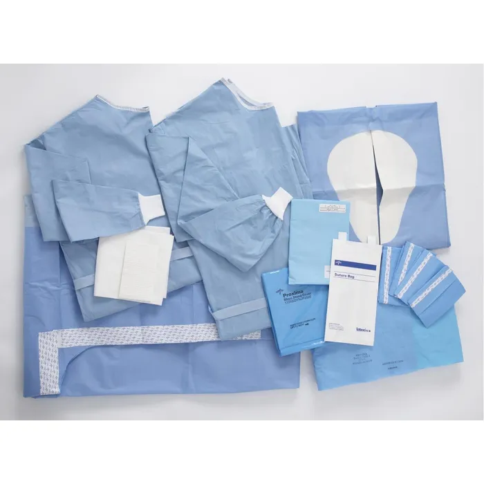
Paquete especializado para cirugía de hombro con campo de 100"×66" con incisión y bolsa colectora, y campo para el cuerpo de 77"×114".

Todo lo necesario para cesárea: campo con bolsa y perforación, gasas, batas, manta para bebé, gorro y contenedor-contador de agujas.

Paquete completo para cesárea con kit adicional para atención inmediata del recién nacido: manta calefactora, gorro neonatal y almohadilla absorbente.

Paquete estéril completo para parto vaginal y alumbramiento: campo bajo-glúteo, campos para piernas, compresas, tijeras de cordón y pinza umbilical.
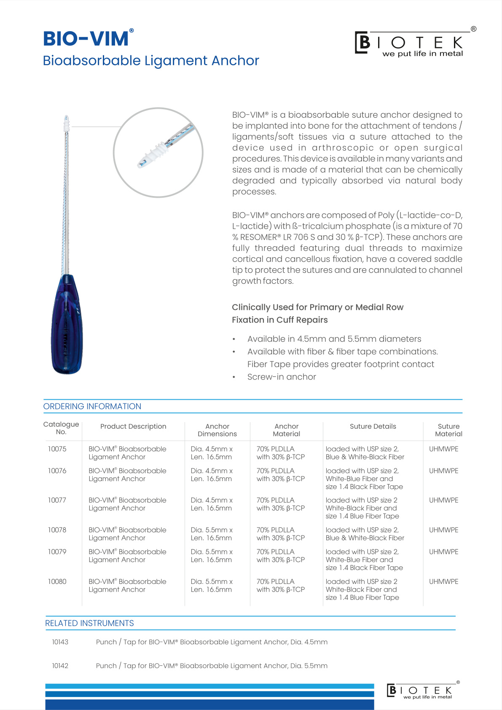
Ancla bioabsorbible (70% PLDLLA + 30% β-TCP) para reparación del manguito rotador. Variante LRP con punta PEEK para técnica knotless Cross Bridge.

Sistema completo para reconstrucción artroscópica de LCA/LCP: botón de fijación femoral BUTTONFIX®, lazo ajustable BT-FIX y placa tibial SMARTFIX™. Técnica S.T.A.R.
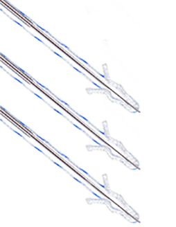
Anclas de ligamento blando (UHMWPE) con orificio piloto reducido. Ø1.5/1.8mm para inestabilidad de hombro (SLAP, Bankart); Ø2.9mm para manguito rotador.
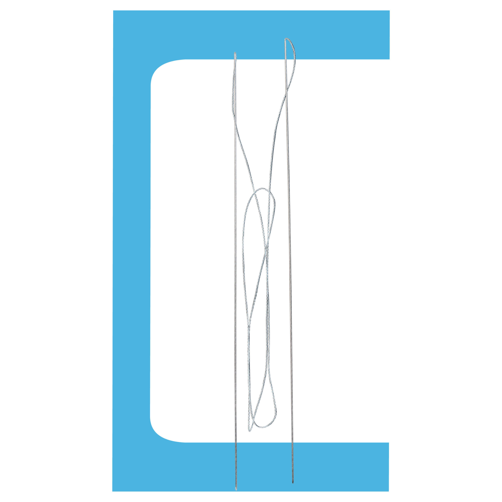
Kit para reparación artroscópica de menisco con técnica dentro-fuera (inside-out). Incluye guías de sutura doble y mono lumen en múltiples ángulos.
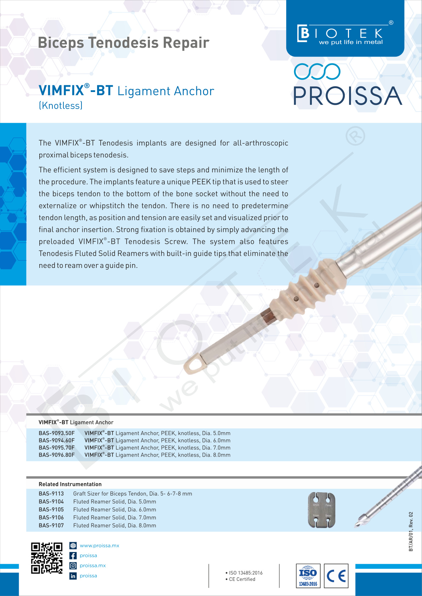
Ancla PEEK sin nudo para tenodesis proximal de bíceps artroscópica. Punta PEEK guía el tendón al fondo del socket sin whipstitch. Disponible en Ø5–8mm.
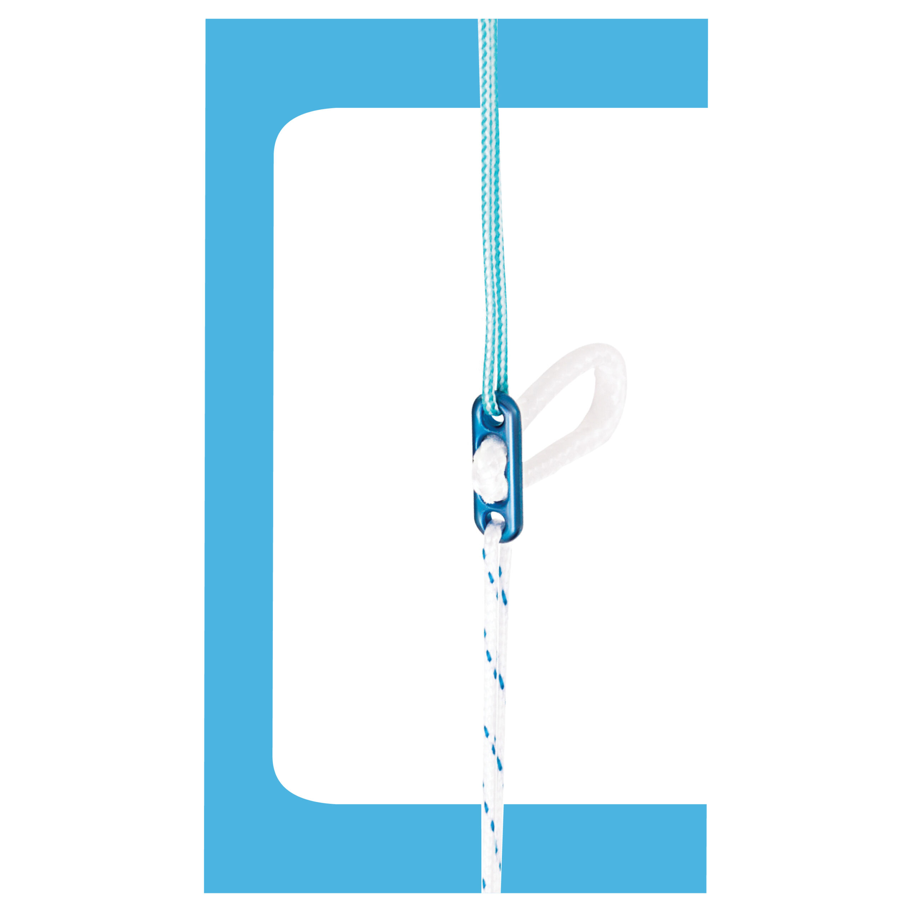
Botón de fijación femoral con lazo continuo knotless para reconstrucción de ligamentos cruzados. UTS probado a 1761N. Procedimiento 100% endoscópico.
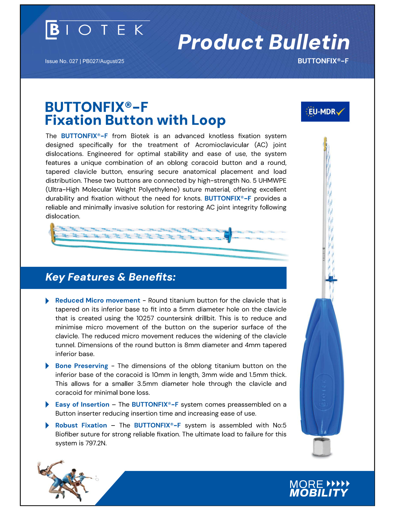
Sistema knotless con lazo para luxación acromioclavicular (AC) y reparación de sindesmosis. Dos botones titanio conectados con BioFiber UHMWPE No.5. UTS 797.2N.
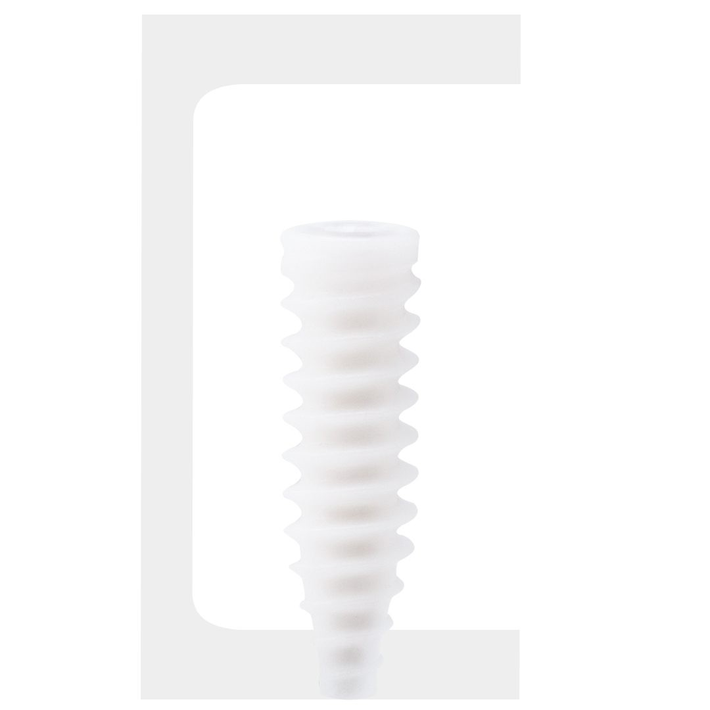
Tornillo de interferencia biocompuesto reabsorbible (75% PLDLLA + 25% BCP) para fijación de injerto en reconstrucción ligamentaria. Rosca cónica canalada. Ø7–11mm.
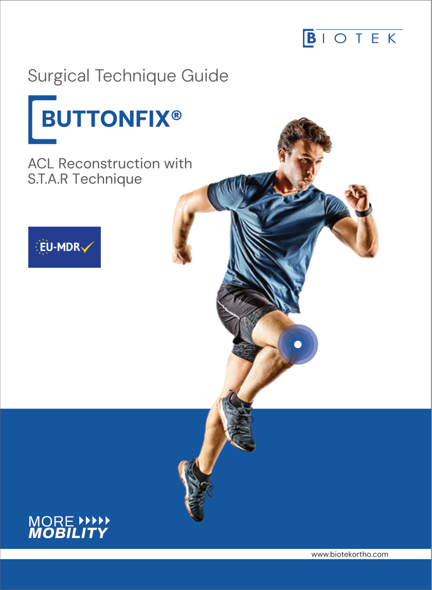
Línea de suturas y cintas de fibra de alta resistencia para aumentación de injerto en cirugía artroscópica. Disponible en fibra, cinta Tape y lazo (loop) en varios calibres.
Nuestro equipo responde en menos de 24 horas. Cuéntanos qué necesitas y te orientamos sobre el producto más adecuado para cada procedimiento.